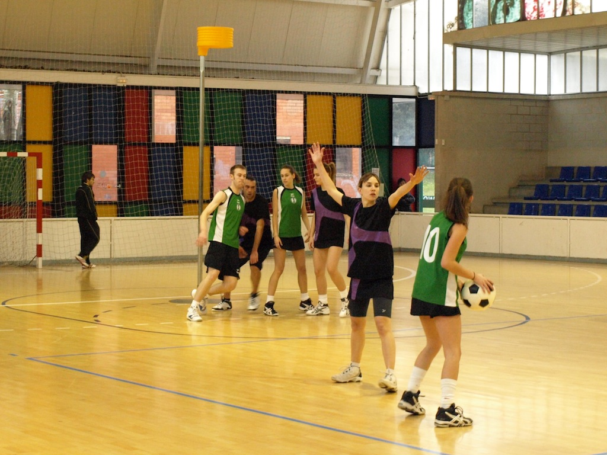
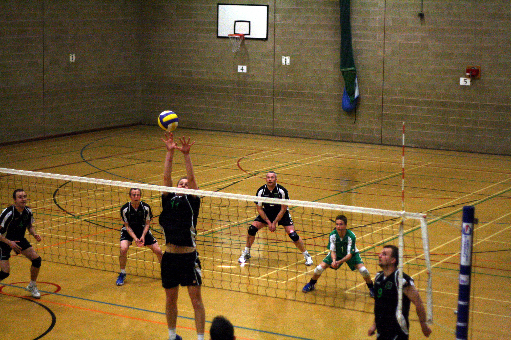

Nederland is een leuk land om te bezoeken. Het beschikt over een interessante cultuur, aardige mensen, rijke historie en veiligheid. Nederland is helemaal volgebouwd, omdat we zo'n klein land zijn. Dat zorgt ook voor, waar onder andere Amsterdaam om bekend staat, de smalle straatjes en oude huisjes, die zeker aan te raden zijn om te bezoeken. Wij staan ook bekend als een heel open land. Dit is onder andere zo door de legalisatie van wiet, maar ook het toestaan van het homohuwelijk, waar Nederland het eerste mee was in de wereld. Natuurlijk beschikt Nederland ook over lekernijen. Waar haring en drop misschien niet iedereen zijn favoriet is, is er genoeg ander lekker eten wat bijna iedereen wel lekker vindt, waaronder oliebollen en stroopwafels. Een groot nadeel aan Nederland is de vele regenval, in bijna elk seizoen. Een paraplu is dus zeker wel nodig. De overheid probeert Nederland te promoten door zoveel mogelijk reclame te maken over de goeie dingen in Nederland.

Waarom zou je Nederland moeten bezoeken?
Als je Nederland wilt bezoeken, dan is er genoeg te zien/doen. Het Rijksmuseum, De Zaanse Schans, Het Anne Frank museum en ga zo maar door. De meeste bezienswaardigheden bevinden zich toch wel in Amsterdam, dus een boottocht of andere rondleiding is zeer aan te raden. Buiten Amsterdam is De Zaanse Schans het meest bezocht. Daar is het net alsof je in Nederland van 100 jaar geleden stapt. De mensen hebben de kleren van vroeger aan en ze wonen ook in de huizen en molens van vroeger. Als je op zoek bent naar kunst, dan zal je bij Het Rijksmuseum moeten zijn. Als je niks van die schilderijen enzo moet hebben, maar wel geinteresseert bent in geschiedenis breng dan zeker een bezoek aan Het Anne Frank Museum. Hier kan je Het Achterhuis bezoeken waar Anne Frank en haar familie ondergedoken zaten. Zorg dan wel dat je ver van te voren een afspraak maakt, zodat je niet uren in de rij hoeft te staan. Ben je op zoek naar wat onstpanning? Dan is Het Vondelpark een goeie plek om uit te rusten, doorheen te fietsen of om wat te eten. Er staan namelijk verschillende eetkraampjes in het vondelpark. Als je Nederland bezoekt, vergeet dan zeker niet te kijken naar de verschillende winkels. In De Zaanse Schans zijn typisch Nederlandse souveniers te vinden, van een klompensleutelhanger tot een kaasmagneet. Er zijn niet alleen souveniers in De Zaanse Schans, je kan er zelfs ijsjes en brood kopen. Nederland staat natuurlijk ook bekend om z'n grote multinationals. Onder andere Philips en Heineken zijn in Nederland ontstaan. Een leuke plek om te bezoeken is het Heineken Museum, waar je leert hoe Heineken is ontstaan.
10 sportclubs in Nederland
Hier worden 10 sportclubs opgesomd, niet op volgorde.
-
1. ZCFC: Een voetbalclub die zich al jaren bevindt in Zaandam en recent nog gerenoveerd is na de komst van AZ. ZCFC.nl
-
2. Furore: Een redelijk nieuwe korfbalclub, gevestigd in Krommenie. kvfurore.nl 
-
3. Randori: Een judoschool die oorspronkelijk uit Assendelft komt maar zich recent heeft uitgebreid naar meerdere steden/dorpen. judoschoolrandori.nl
-
4. De Club: Een moderne sportschool die zich bezighoud met verschillende vechtsporten. sportcentrumdeclub.nl
-
5. Shisei: Sportclub die lessen in karate geeft. shiseikrommenie.nl
-
6. Odizfrogs: Sportvereniging die honkbal,softbal en petanque geven. odizfrogs.nl
-
7. VVZaanstad: Volleybalvereniging gevestigd in Zaanstad. vvzaanstad.nl 
-
8. Fortuna Wormerveer: Voetbalclub die uitkomt op redelijk hoog niveau. fortuna-wormerveer.nl
-
9. Team-schreiber: Vechtsportclub in Krommenie die verschillende vechtsporten geven. team-schreiber.com
-
10. Hwa-Rang Dragon: Gym waar les geven wordt in Taekwando, Brazilian Jiu-Jitsu en Mudo Referral www.taekwon.nl/brazilian-jiu-jitsu/
Brazilian Jiu Jitsu
Ben je geinteresseerd in lessen in Brazilian Jiu-Jitsu en wil je daarbij geholpen worden door goeie leraren? Klik dan op deze link: